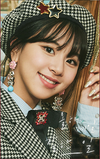

Nayeon (KR)
Sept 22, 1995 (23)
- Lead Vocalist
- Lead Dancer
- Center
- Fake Maknae
- Airhead unnie
- Known for her aegyo
- Best friends with Jeongyeon
Lyrics:
Jeongyeon (KR)
Nov. 1, 1996 (22)
- Lead Vocalist
- Obsessed with cleanliness
- Best friends with Nayeon
- Dislikes aegyo (especially Nayeon's)
Lyrics:
Momo (JP)
Nov. 9, 1996 (22)
- Main Dancer
- Sub Vocalist
- Rapper (sometimes)
- Jokbal fanatic
- Loves eating and cooking
- Close friends with Sana
Lyrics:

Sana (JP)
Dec. 29, 1996 (22)
- Vocalist
- Shy Shy Shy
- TWICE's variety show ace
- Known for her aegyo
- Extremely bubbly personality
- Somewhat clumsy
- Close friends with Momo
Lyrics:
Jihyo (KR)
Feb 1, 1997 (22)
- TWICE's Leader
- Main Vocalist
- Trainee for 10 years
- Responsible and driven
- Has her aegyo moments
- Dating Kang Daniel
Lyrics:
Mina (JP)
March 24, 1997 (22)
- Main Dancer
- Vocalist
- Proficient in ballet (known as Black Swan)
- Voice of an angel
- Most introverted member
- Can't do aegyo
- English name is Sharon
- Signature color is mint green
Lyrics:
Dahyun (KR)
May 28, 1998 (21)
- Lead Rapper
- Vocalist
- Widely known as Dubu (Tofu)
- School Meal Club Member
- Never without a smile
- Excels at crackhead dancing
- Known to be funny among members
- Long time friends with Chaeyoung
Lyrics:

Chaeyoung (KR)
April 23, 1999 (20)
- Main Vocalist
- Vocalist
- Strawberry Princess
- Known to draw in her free time
- Long time friends with Dahyun
Lyrics:
Tzuyu (TW)
June 14, 1999 (20)
- Lead Dancer
- Vocalist
- Visual
- Maknae
- Most hard working member
- Somewhat introverted
- Heart of an angel
- Close friends with CLC's Elkie
Lyrics: